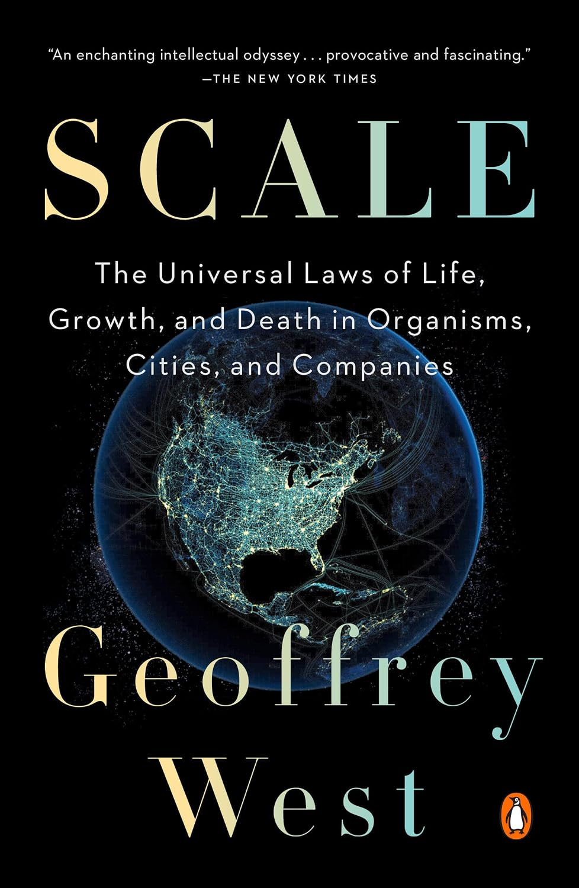

杰弗里·韦斯特（Geoffrey West）大半生都在研究基本粒子。他在剑桥读物理，1966年于斯坦福拿到粒子物理博士，后来进入洛斯阿拉莫斯国家实验室，领导那里的高能物理组。年近六十，他却把注意力转向了一个看似与夸克毫不相干的问题：为什么大象的寿命远长于老鼠，而所有哺乳动物一生的心跳次数却大致相同？《规模》正是这场跨界追问的结晶。
在圣塔菲研究所（他曾于2005至2009年出任所长，并在2006年入选《时代》周刊"全球百位最具影响力人物"），韦斯特发现，从细菌到蓝鲸，生物体的代谢率并不与体重成正比，而是按体重的四分之三次方缩放——这正是生物学家马克斯·克莱伯在上世纪三十年代发现的"克莱伯定律"。更惊人的是，大量生理指标的缩放指数都是四分之一的整数倍。韦斯特用一个物理学家的直觉给出了解释：驱动这一切的，是像血管一样反复分叉、填满整个身体的分形网络。因为代谢是"次线性"缩放的，体型每翻一番，单位体重的能耗反而下降约四分之一——于是越大的动物活得越久、心跳越慢、"生命的节奏"越舒缓。
第二部分，韦斯特把同一套数学搬到城市上，结论却翻转了。城市里的社会经济指标——工资、专利、GDP，乃至犯罪和艾滋病例——都随人口"超线性"增长，指数约为1.15：一座城市人口每翻一番，人均产出与创造力大约提升15%。而道路、管线这类物理基础设施则与生物一样次线性缩放，指数约0.85——这解释了大城市为何在人均意义上既更高效、又更"快"。第三部分转向公司：韦斯特发现企业更像生物而非城市，大体按次线性缩放，也因此会衰老、会死亡；而城市几乎从不消亡。超线性增长在数学上会导致"有限时间奇点"——除非一次次范式级创新"重置时钟"，且创新的间隔越来越短，增长才不至于崩溃。
康奈尔大学数学家、《x的乐趣》作者史蒂文·斯托加茨（Steven Strogatz）的话道出了此书的分量："在科学史上，一个人能提出既宏大、大胆、优美，又简单得惊人、而且最终被证明是对的新想法，是罕见的。杰弗里·韦斯特就有过这样一个想法。而《规模》就是它的故事。"《华尔街日报》则称它是"作为惊奇、也作为启迪的科学写作"。当然，也有科学同行质疑克莱伯定律的四分之三次方是否真如书中所言那般普适——这类争论恰恰说明，韦斯特提出的是一个可被检验、而非空泛的框架。
《规模》真正的价值，在于它递给读者一副"缩放的眼镜"：当你知道规模翻倍带来的往往不是等比例的变化，你再看待一家扩张中的公司、一座膨胀的城市、乃至无限增长的承诺时，都会多一分警觉。中文版《规模：复杂世界的简单法则》由张培翻译、中信出版社于2018年出版。